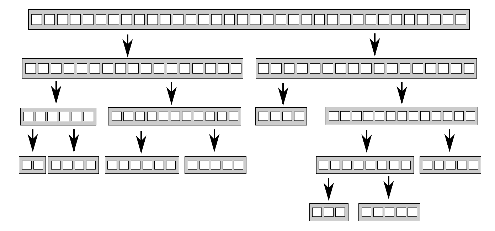

8.1 线程间划分工作
假设作为建造一座房子总工程师，为了完成房屋的建造，需要挖地基、砌墙、添置水暖、接入电线等等。理论上，如果你很擅长建造屋子，这些事情都可以由自己来完成，但是这样就要花费很长时间，并且需要不断的切换任务。你也可以雇佣一些人来帮助你完成房子的建造。那么现在需要决定雇多少人，以及雇佣人员具有什么样的技能。雇佣的人到了后，进展速度就要比之前快很多。
当然，你也可以雇佣个包工队(专家组)，由瓦工、木匠、电工和水管工组成。队员们只做自己擅长的，所以当没有水暖任务时，水管工会休息。因为人多的缘故，要比之前一个人的速度快很多，并且水管工在收拾厕所的时候，电工可以将电线连接到厨房，不过当没有属于自己的任务时就会休息。即使有人在休息，你可能还是能感觉到包工队要比雇佣一个什么都会的人快。包工队不需要更换工具，并且每个人的任务都要比会的人做的快。是快还是慢，取决于特定的情况——需要尝试和观察。
即使雇佣包工队，你依旧可以选择人数不同的团队(可能在一个团队中，瓦工的数量超过电工)。同样，这会是一种补足，并且在建造不止一座房子的时候，会改变整体效率。即使水管工没有太多的任务，在建造过一次房子后，你依旧能让他总是处于忙碌的状态。当然，即使每次工作只有那么几个人工作，你还需要负担整个团队的开销。
建造例子已经足够说明问题，这与线程有什么关系呢？这些问题也会发生在线程上。需要决定使用多少个线程，并且这些线程应该去做什么。需要决定是使用“全能”线程去完成所有的任务，还是使用“专业”线程去完成一件事情，或将两种方法混合。使用并发时，需要作出诸多选择来驱动并发，选择会决定代码的性能和可读性。因此选择至关重要，所以设计应用结构时，需要作出适当的决定。本节中，将看到很多划分任务的技术。
8.1.1 对数据进行预处理划分
最简单的并行算法就是并行化的std::for_each，会对数据集中每个元素执行同一个操作。为了并行化该算法，可为数据集中每个元素分配一个线程。如何划分才能获得最佳的性能，很大程度上取决于数据结构实现的细节，之后有关性能问题的章节会再提及。
最简单的分配方式：第一组N个元素分配一个线程，下一组N个元素再分配一个线程，以此类推，如图8.1所示。不管数据怎么分，每个线程都会对分配给它的元素进行操作，但不会和其他线程进行沟通，直到处理完成。

图8.1 向线程分发连续的数据块
使用过MPI(Message Passing Interface)[1]和OpenMP[2]的同学对这个结构一定很熟悉：一项任务被分割成多个，放入一个并行任务集中，执行线程独立的执行这些任务，结果在主线程中合并。这种方式在2.4节中的accumulate的例子中使用过，所有并行任务和主线程的任务都是累加和。对于for_each来说，主线程将无事可做，因为这个计算不需要处理最终结果。
最后一步对于并行程序来说十分重要，(如代码2.8中的实现)最后一步就是串行的。不过，这一步同样也是能并行化。accumulate实际上是一个递减操作，所以当线程数量大于一个线程上最小处理项时，可以对accumulate进行递归调用。或者工作线程就像做一个完整的任务一样，对步骤进行递减。
虽然这个技术十分强大，但是并不是哪里都适用。有时不能像之前那样，对任务进行整齐的划分，因为只有对数据进行处理后，才能进行明确的划分。这里的方式特别适用了递归算法，下面就来看看这种特别的方式。
8.1.2 递归划分
快速排序有两个最基本的步骤：将数据划分到中枢元素之前或之后，然后对中枢元素之前和之后的两半数组再次进行快速排序。这里不能通过对数据的简单划分达到并行，因为只有在一次排序结束后，才能知道哪些项在中枢元素之前和之后。当要对这种算法进行并行化，很自然的会想到使用递归。每一级的递归都会多次调用quick_sort函数，因为需要知道哪些元素在中枢元素之前和之后。递归调用是完全独立的，因为其访问的是不同的数据集，并且每次迭代都能并发执行。图8.2展示了这样的递归划分。

图 8.2 递归划分数据
第4章中已经见过这种实现，比起对数据块递归调用函数，使用std::async()可以为每一级生成小于数据块的异步任务。使用std::async()时，C++线程库就能决定何时让一个新线程执行任务，并对任务进行同步。
对一个很大的数据集进行排序时，每层递归都产生新线程，最后就会产生大量的线程。大量线程会对性能有影响，如果线程太多，应用将会运行的很慢。如果数据集过于庞大，会将资源耗尽。所以在递归的基础上进行任务的划分，就是一个不错的主意。只需要将一定数量的数据打包后，交给线程即可。std::async()可以处理这种简单的情况，当然也有其他组选择。
另一种选择是使用std::thread::hardware_concurrency()函数来确定线程的数量，就像代码2.8中的accumulate()一样。将已排序的数据推到线程安全的栈上(如第6、7章中提及的栈)。线程无所事事时，不是已经完成对自己数据块的梳理，就是在等待一组排序数据的产生。所以，线程可以从栈上获取这组数据，并且对其排序。
下面的代码就是使用以上方式实现。与大多数示例一样，只是演示，而非工业代码。如果编译器支持C++17，最好使用标准库提供的并行算法，这些会在第10章再来讨论。
代码8.1 使用栈的并行快速排序算法——等待数据块排序
template<typename T>
struct sorter // 1
{
struct chunk_to_sort
{
std::list<T> data;
std::promise<std::list<T> > promise;
};
thread_safe_stack<chunk_to_sort> chunks; // 2
std::vector<std::thread> threads; // 3
unsigned const max_thread_count;
std::atomic<bool> end_of_data;
sorter():
max_thread_count(std::thread::hardware_concurrency()-1),
end_of_data(false)
{}
~sorter() // 4
{
end_of_data=true; // 5
for(unsigned i=0;i<threads.size();++i)
{
threads[i].join(); // 6
}
}
void try_sort_chunk()
{
boost::shared_ptr<chunk_to_sort > chunk=chunks.pop(); // 7
if(chunk)
{
sort_chunk(chunk); // 8
}
}
std::list<T> do_sort(std::list<T>& chunk_data) // 9
{
if(chunk_data.empty())
{
return chunk_data;
}
std::list<T> result;
result.splice(result.begin(),chunk_data,chunk_data.begin());
T const& partition_val=*result.begin();
typename std::list<T>::iterator divide_point= // 10
std::partition(chunk_data.begin(),chunk_data.end(),
[&](T const& val){return val<partition_val;});
chunk_to_sort new_lower_chunk;
new_lower_chunk.data.splice(new_lower_chunk.data.end(),
chunk_data,chunk_data.begin(),
divide_point);
std::future<std::list<T> > new_lower=
new_lower_chunk.promise.get_future();
chunks.push(std::move(new_lower_chunk)); // 11
if(threads.size()<max_thread_count) // 12
{
threads.push_back(std::thread(&sorter<T>::sort_thread,this));
}
std::list<T> new_higher(do_sort(chunk_data));
result.splice(result.end(),new_higher);
while(new_lower.wait_for(std::chrono::seconds(0)) !=
std::future_status::ready) // 13
{
try_sort_chunk(); // 14
}
result.splice(result.begin(),new_lower.get());
return result;
}
void sort_chunk(boost::shared_ptr<chunk_to_sort> const& chunk)
{
chunk->promise.set_value(do_sort(chunk->data)); // 15
}
void sort_thread()
{
while(!end_of_data) // 16
{
try_sort_chunk(); // 17
std::this_thread::yield(); // 18
}
}
};
template<typename T>
std::list<T> parallel_quick_sort(std::list<T> input) // 19
{
if(input.empty())
{
return input;
}
sorter<T> s;
return s.do_sort(input); // 20
}
parallel_quick_sort函数⑲代表了sorter类①的功能，支持在栈上简单的存储无序数据块②，并且对线程进行设置③。do_sort成员函数⑨主要是对数据进行划分⑩。相较于对每个数据块产生新线程，这次会将数据块推到栈上⑪，并使用备用处理器⑫产生新线程。因为小于部分的数据块可能由其他线程进行处理，就需要等待线程完成⑬。为了让所有事情顺利进行(只有一个线程和其他所有线程都忙碌时)，线程处于等待状态时⑭，就让当前线程尝试处理栈上的数据。try_sort_chunk只是从栈上弹出一个数据块⑦，并且对其进行排序⑧，将结果存在promise中，让线程对已存在于栈上的数据块进行提取⑮。
当没有设置end_of_data时⑯，新生成的线程还在尝试从栈上获取需要排序的数据块⑰。循环检查中，也要给其他线程机会⑱，可以从栈上取下数据块进行操作。这里的实现依赖于sorter类④对线程的清理。当所有数据都已完成排序，do_sort将会返回(即使还有工作线程在运行)，所以主线程将会从parallel_quick_sort⑳中返回，之后会销毁sorter对象。析构函数会设置end_of_data标志⑤，以及等待所有线程完成工作⑥，标志将决定是否终止线程函数的内部循环⑯。
这个方案中，不用为spawn_task产生的无数线程所困扰，也不用再依赖C++线程库，这里可以选择执行线程的数量。该方案的线程数量就是std::thread::hardware_concurrency()，这样就能避免任务过于频繁的切换。不过，这里还有两个问题：线程管理和通讯。要解决这两个问题就要增加代码的复杂度，虽然线程对数据项分开处理，不过所有对栈的访问都可以向栈添加新的数据块，并且移出数据块以作处理。重度竞争会降低性能，原因会在后面给出。
这个方案使用到了特殊的线程池——所有线程任务都来源于一个等待链表，然后线程会去完成任务，任务完成后会再来链表提取任务。这个线程池会出问题(包括对工作链表的竞争)，问题的解决方案将在第9章提到。关于多处理器的问题，将会在本章后面的章节中做出更为详细的介绍(详见8.2.1)。
任务几种划分方法：处理前划分和递归划分(都需要事先知道数据的长度固定)，还有上面的划分方式。事情并非总是这样好解决，当数据是动态生成或是通过外部输入，那这里的办法就不适用了。这种情况下，基于任务类型的划分方式，就要好于基于数据的划分方式。
8.1.3 通过任务类型划分
虽然会为每个线程分配不同的数据块，因为这里每个线程对每个数据块的操作是相同的，所以工作的划分(无论是之前就划分好，还是使用递归的方式划分)仍停留在理论阶段。另一种选择是让线程做专门的工作，就是每个线程做不同的工作，就像水管工和电工在建造一所屋子的时候，所做的不同工作那样。线程可能会对同一段数据进行操作，但对数据进行不同的操作。
对分工的排序，也就是分离关注点。每个线程都有不同的任务，这意味着真正意义上的线程独立。其他线程偶尔会向特定线程交付数据，或是通过触发事件的方式来进行处理。不过总体而言，每个线程只需要关注自己所要做的事情即可。其本身就是良好的设计，每一段代码只对自己的部分负责。
分离关注
当有多个任务需要持续运行一段时间，或需要及时进行处理的事件(比如，按键事件或传入网络数据)，且还有其他任务正在运行时，单线程应用采用的是单责任原则处理冲突。单线程中代码会执行任务A(部分)后，再去执行任务B(部分)，再检查按钮事件，再检查传入的网络包，然后在循环回去，执行任务A。这将会使得任务A复杂化，因为需要存储完成状态，以及定期从主循环中返回。如果在循环中添加了很多任务，那么程序将运行的很慢。并且用户会发现，在按下按键后，很久之后才会有反应。我确定你已经在一些程序中见过这种情况：给程序分配一项任务后，发现接口会封锁，直到这项任务完成。
当使用独立线程执行任务时，操作系统会帮忙处理接口问题。执行任务A时，线程可以专注于执行任务，而不用为保存状态从主循环中返回。操作系统会自动保存状态，当需要的时候将线程切换到任务B或任务C。如果目标系统是带有多核或多处理器，任务A和任务B可很可能真正的并发执行。处理按键时间或网络包的代码，就能及时执行了。所有事情都完成的很好，用户得到了及时的响应。当然，作为开发者只需要写具体操作的代码即可，不用将控制分支和用户交互混在一起了。
听起来不错，玫瑰色的愿景呀。事实真会如上面所说的那样简单？一切取决于细节。如果每件事都是独立的，线程间就不需要交互，这样的话一切都很简单。不幸的是，现实没那么美好。后台那些优雅的任务，经常会被用户要求做一些事情，并且它们需要通过更新用户接口的方式，来让用户知道它们完成了任务。或者，用户可能想要取消任务，就需要用户向接口发送一条消息，告知后台任务停止运行。这两种情况都需要认真考虑、设计、以及适当的同步，不过这里还是会对分离的部分产生担心。用户接口线程只能处理用户接口，当其他线程告诉该线程要做什么时，用户接口线程会进行更新。同样，后台线程只运行它们所关注的任务，有时会发生“允许任务被其他线程所停止”的情况。这两种情况下，后台线程需要照顾来自其他线程的请求，线程本身只知道它们的请求与自己的任务有所关联。
多线程下有两个危险需要分离。第一个是对错误的担忧(主要表现为线程间共享着很多的数据)，第二是不同的线程要相互等待，这两种情况都是因为线程间很密切的交互。这种情况发生时，就需要看一下为什么需要这么多交互。当所有交互都有同样的问题，就应该使用单线程来解决，并将引用同一源的线程提取出来。或者当有两个线程需要频繁的交流，在没有其他线程时，就可以将这两个线程合为一个线程。
当通过任务类型对线程间的任务进行划分时，不应该让线程处于隔离态。当多个输入数据集需要使用同样的操作序列，可以将序列中的操作分成多个阶段让线程执行。
划分任务序列
当任务会应用到相同操作序列，去处理独立的数据项时，就可以使用流水线(pipeline)系统进行并发。这好比一个物理管道：数据流从管道一端进入，进行一系列操作后，从管道另一端出去。
使用这种方式划分工作，可以为流水线中的每一阶段操作创建一个独立线程。当一个操作完成，数据元素会放在队列中，供下一阶段的线程使用。这就允许第一个线程在完成对于第一个数据块的操作时，第二个线程可以对第一个数据块执行管线中的第二个操作。
这就是线程间划分数据的一种替代方案(如8.1.1描述)，这种方式适合于操作开始前，且对输入数据处长度不清楚的情况。例如：数据来源可能是从网络，或者可能是通过扫描文件系统来确定要处理的文件。
流水线对于队列中的耗时操作处理也很合理，通过对线程间任务的划分，就能对应用的性能有所改善。假设有20个数据项，需要在四核的机器上处理，并且每一个数据项需要四个步骤来完成操作，每一步都需要3秒来完成。如果将数据分给了四个线程，每个线程上就有5个数据项要处理。假设在处理时，没有其他线程对处理过程进行影响，在12秒后4个数据项处理完成，24秒后8个数据项处理完成，以此类推。当20个数据项都完成操作，就需要1分钟的时间。管线中就会完全不同，四步可以交给四个内核，第一个数据项可以被每一个核进行处理，所以其还是会消耗12秒。在12秒后你就能得到一个处理过的数据项，这相较于数据划分并没有好多少。不过，当流水线动起来，事情就会不一样了。第一个核处理第一个数据项后，数据项就会交给下一个内核，所以第一个核在处理完第一个数据项后，其还可以对第二个数据项进行处理。在12秒后，每3秒将会得到一个已处理的数据项，这就要好于每隔12秒完成4个数据项。
为什么整批处理的时间要长于流水线呢？因为最后一个核在开始处理第一个元素时，等待了9秒。更平滑的操作能在某些情况下获益更多，考虑如下情况：当一个系统用来播放高清数字视频。为了让视频能够播放，至少要保证25帧每秒的解码速度。这些图像需要有均匀的间隔，才会给观众留有连续播放的感觉。一个应用可以在1秒解码100帧，不过在解完就需要暂停1s的时候，这个应用就没有意义了。另一方面，观众能接受在视频开始播放的时候有一定的延迟。这种情况，并行使用流水线就能得到稳定的解码率。
看了这么多线程间划分工作的技术，接下来让我们来看一下在多线程系统中有哪些因素会影响性能，并了解一下这些因素是如何影响划分方案的。